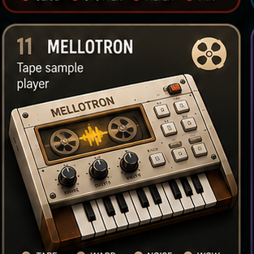

Mellotron
Tape-style page with generated audio and local pad memory.
Layer: tape-style synth plus local pad memory.
Use: play pads or load local audio.
Input: touch, mouse, keyboard, and MIDI-ready pads.

Tape-style page with generated audio and local pad memory.